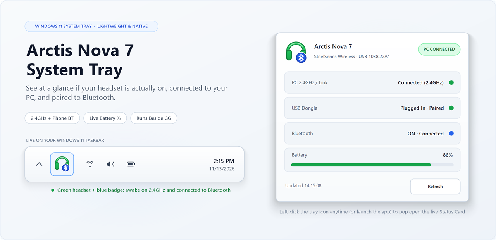
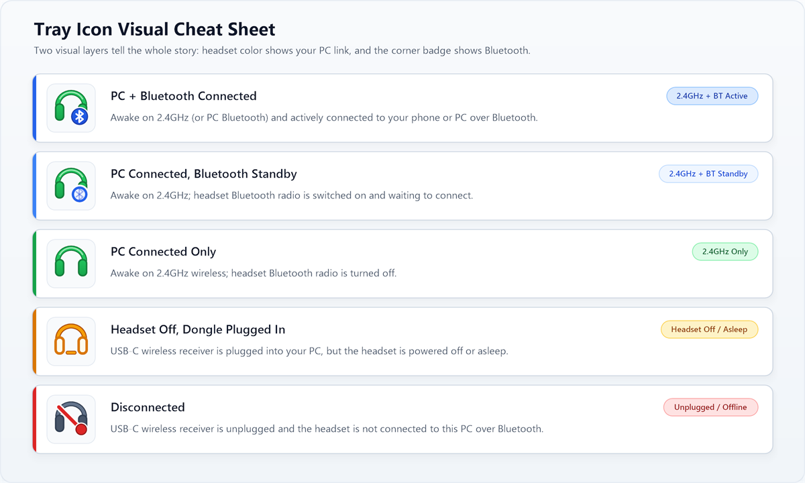
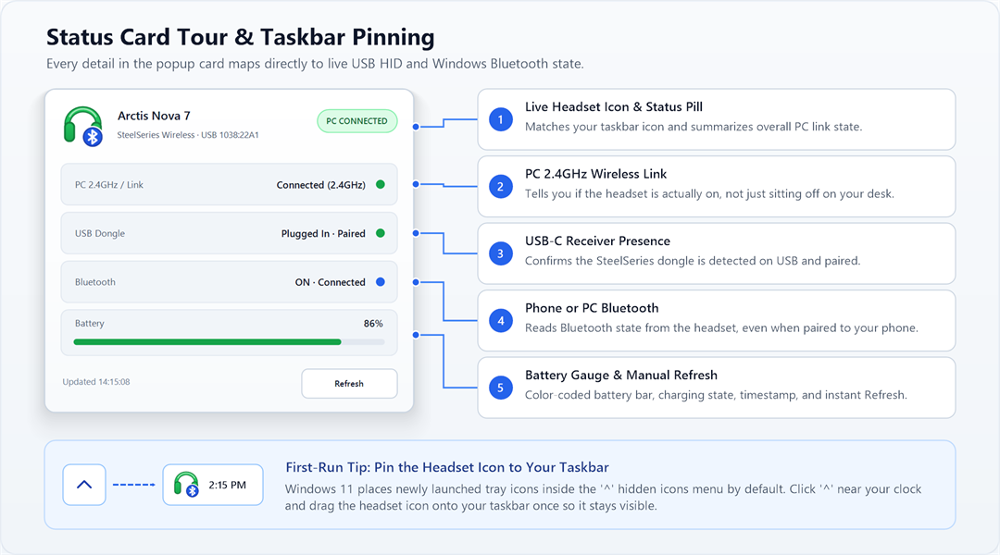

Arctis Nova 7 System Tray for Windows 11
See at a glance if your SteelSeries Arctis Nova 7 headset is actually powered on, how much battery percentage you have left, and whether Bluetooth is connected to your phone or PC, right next to your Windows 11 clock.

Built for the Quirks Windows 11 Misses
As long as the SteelSeries USB-C wireless receiver stays plugged into your PC, Windows 11 claims your Arctis Nova 7 headphones are connected even when the headset is turned off on your desk. Audio disappears into a powered-off headset, or you realize the next morning that you forgot to turn it off overnight.
Works Without SteelSeries GG (and Peaceful Alongside It)
Queries the USB-C wireless receiver directly through the built-in Windows HidUsb (input.inf) driver using shared Win32 HID handles. You can run it on a clean PC without SteelSeries GG installed, or run it right beside SteelSeries GG and Sonar with zero device locks.
Real Hardware State, Zero Background Clutter
Reads live 2.4 GHz power state, battery percentage, charging flag, hardware boom-mic mute state, and simultaneous phone Bluetooth status in under a millisecond every 2.5 seconds, writing nothing to %APPDATA%.
Get Running in 30 Seconds
Requires Windows 11 and the .NET 9 Windows Desktop Runtime. No installer wizard or admin privileges needed.
Download & Extract
Grab ArctisNovaTray-v1.2.0-win-x64.zip from the GitHub Releases page and unzip it into any folder where you keep utilities.
Launch the Tray App
Double-click ArctisNovaTray.exe (or run .\Start-ArctisNovaTray.ps1). The Status Card opens above your clock right after the first hardware check so you know it is active.
Pin to Taskbar & Optional Auto-Start
Click the ^ hidden-icons arrow near your Windows 11 clock once and drag the headset icon onto your taskbar. Toggle Start with Windows in the card if you want quiet sign-in launch.
# Launch the tray app (or bring the Status Card to the front if already running)
.\Start-ArctisNovaTray.ps1
# Query live headset status in PowerShell as an object or raw JSON
.\scripts\Get-ArctisNovaStatus.ps1
.\scripts\Get-ArctisNovaStatus.ps1 -RawJson
# Stop the running tray app cleanly
.\scripts\Stop-ArctisNovaTray.ps15-State Taskbar Icon Visual Guide
Two visual layers tell the whole story on both dark (#18181B) and light (#F3F4F6) Windows 11 taskbars: the headset color shows your PC audio link, and the bottom-right badge shows the headset's Bluetooth radio.
PC + Bluetooth Connected
2.4 GHz + BT ActiveHeadset is powered on over 2.4 GHz wireless (or PC Bluetooth) and actively connected to your phone, tablet, or PC over Bluetooth.
PC Connected, Bluetooth Waiting
2.4 GHz + BT WaitingHeadset is awake on 2.4 GHz wireless. Its Bluetooth radio is switched on inside the headset and waiting to connect to a paired device.
PC Connected Only
2.4 GHz OnlyHeadset is awake on 2.4 GHz wireless, and Bluetooth on the headset is turned off.
Headset Off, Receiver Plugged In
Off or AsleepThe SteelSeries USB-C receiver is plugged into your PC, so Windows still lists an audio output, but the headset itself is powered off, asleep, or out of range.
Disconnected
Unplugged / OfflineThe USB-C wireless receiver is unplugged and the headset is not connected to this PC over Windows Bluetooth.

Popup Status Card Annotated Tour
Left-click the tray icon anytime to open the high-contrast Light Mode Status Card. Navigate with Tab / Shift+Tab, refresh on demand with F5, and dismiss with Esc, the × button, or a click outside.

-
1. Live Icon, Status Pill & Close
Mirrors your taskbar icon beside an instant pill (
PC CONNECTED,PC BLUETOOTH,HEADSET OFF, orDISCONNECTED) and keyboard-accessible×button. -
2. Headset Link & Mic-Mute Badge
Confirms whether the wireless link is live or asleep, and displays an inline
MIC MUTEDbadge when the boom mic is muted on Gen 2 / refresh firmware. -
3. USB-C Receiver Presence
Shows whether the SteelSeries USB-C transmitter is physically plugged into your PC (
Plugged In · Active,Plugged In · Waiting, orUnplugged). - 4. Phone or PC Bluetooth Reads the headset's Bluetooth radio directly from Gen 2 / 2026 refresh receivers, showing when your headset is paired to your phone while gaming on PC.
-
5. Battery Gauge & Honest Offline Track
Shows green (35%+), amber (15-34%), red (<15%), or blue charging bars when awake, and switches to
Turn headset on to readwhen powered off instead of a fake cached 100%. -
6. Start with Windows, 12h Clock & Refresh
Includes an opt-in Start with Windows switch (launching quietly with
--silent), a live-ticking 12-hour timestamp, and a tactileRefreshbutton.
Supported SteelSeries Arctis Nova 7 Models (15 USB-C PIDs)
Supports the full wireless SteelSeries Arctis Nova 7 family under USB Vendor ID 0x1038 (UsagePage 0xFFC0, Usage 0x0001): Arctis Nova 7, Nova 7P, Nova 7X, Nova 7 Gen 2, Nova 7P Gen 2, Nova 7X Gen 2, Diablo IV Edition, and World of Warcraft Edition, plus direct Windows Bluetooth connections when used without the USB-C receiver.
| Headset Model | USB VID:PID | Firmware Group | Reported Telemetry |
|---|---|---|---|
| SteelSeries Arctis Nova 7 (2026 Refresh) | 1038:22A1 (0x22A1) |
Gen 2 / Refresh | 2.4 GHz awake/off, 0-100% battery, charging, headset Bluetooth (phone or PC), mic mute |
| SteelSeries Arctis Nova 7 Gen 2 (Wireless Gen 2) | 1038:227E (0x227E) |
Gen 2 / Refresh | 2.4 GHz awake/off, 0-100% battery, charging, headset Bluetooth (phone or PC), mic mute |
| SteelSeries Arctis Nova 7P Gen 2 | 1038:22A7 (0x22A7) |
Gen 2 / Refresh | 2.4 GHz awake/off, 0-100% battery, charging, headset Bluetooth (phone or PC), mic mute |
| SteelSeries Arctis Nova 7P Gen 2 (V2) | 1038:2298 (0x2298) |
Gen 2 / Refresh | 2.4 GHz awake/off, 0-100% battery, charging, headset Bluetooth (phone or PC), mic mute |
| SteelSeries Arctis Nova 7X Gen 2 | 1038:2258 (0x2258) |
Gen 2 / Refresh | 2.4 GHz awake/off, 0-100% battery, charging, headset Bluetooth (phone or PC), mic mute |
| SteelSeries Arctis Nova 7X Gen 2 (Rev B) | 1038:229E (0x229E) |
Gen 2 / Refresh | 2.4 GHz awake/off, 0-100% battery, charging, headset Bluetooth (phone or PC), mic mute |
| SteelSeries Arctis Nova 7X Gen 2 (V2) | 1038:22AD (0x22AD) |
Gen 2 / Refresh | 2.4 GHz awake/off, 0-100% battery, charging, headset Bluetooth (phone or PC), mic mute |
| SteelSeries Arctis Nova 7X (2026 Refresh) | 1038:22A5 (0x22A5) |
Gen 2 / Refresh | 2.4 GHz awake/off, 0-100% battery, charging, headset Bluetooth (phone or PC), mic mute |
| SteelSeries Arctis Nova 7 Diablo IV Edition (Refresh) | 1038:22A9 (0x22A9) |
Gen 2 / Refresh | 2.4 GHz awake/off, 0-100% battery, charging, headset Bluetooth (phone or PC), mic mute |
| SteelSeries Arctis Nova 7 (Original) | 1038:2202 (0x2202) |
Original Gen 1 | 2.4 GHz awake/off, 0-100% battery (25% steps), charging, PC Bluetooth fallback |
| SteelSeries Arctis Nova 7P (Original) | 1038:220A (0x220A) |
Original Gen 1 | 2.4 GHz awake/off, 0-100% battery (25% steps), charging, PC Bluetooth fallback |
| SteelSeries Arctis Nova 7X (Original) | 1038:2206 (0x2206) |
Original Gen 1 | 2.4 GHz awake/off, 0-100% battery (25% steps), charging, PC Bluetooth fallback |
| SteelSeries Arctis Nova 7X (Original Rev B) | 1038:22A4 (0x22A4) |
Original Gen 1 | 2.4 GHz awake/off, 0-100% battery (25% steps), charging, PC Bluetooth fallback |
| SteelSeries Arctis Nova 7 Diablo IV Edition | 1038:223A (0x223A) |
Original Gen 1 | 2.4 GHz awake/off, 0-100% battery (25% steps), charging, PC Bluetooth fallback |
| SteelSeries Arctis Nova 7 World of Warcraft Edition | 1038:227A (0x227A) |
Original Gen 1 | 2.4 GHz awake/off, 0-100% battery (25% steps), charging, PC Bluetooth fallback |
Common Questions
Straight answers to common questions about SteelSeries GG compatibility, awake-vs-off detection, battery readouts, and Windows startup.
Does Arctis Nova 7 System Tray work without SteelSeries GG installed or running?
Yes. The app communicates directly with the SteelSeries USB-C wireless receiver firmware over the standard Windows inbox HID driver (HidUsb / input.inf) and queries native Windows Bluetooth PnP properties via cfgmgr32.dll. You do not need SteelSeries GG, Engine, or Sonar installed at all.
If you do keep SteelSeries GG and Sonar running, both applications coexist peacefully: every HID handle is opened with shared access (FILE_SHARE_READ | FILE_SHARE_WRITE) and short non-blocking overlapped reads so audio endpoints and GG device controls are never locked out.
How do I tell if my SteelSeries Arctis Nova 7 is turned off when the USB-C receiver stays plugged in?
Because the USB-C wireless receiver stays powered by your PC's USB port, Windows keeps listing the Arctis Nova 7 audio endpoint as active even when the headset is turned off. Arctis Nova 7 System Tray sends the 0xB0 status request to the receiver and checks link byte inBuf[2].
As soon as you power the headset off (or when it auto-sleeps), the taskbar icon changes from solid green to a hollow amber headset, the hover tooltip updates to Nova 7: Off or Asleep (Receiver In), and the Status Card suppresses stale cached battery numbers in favor of Turn headset on to read.
How do I see Arctis Nova 7 battery percentage and phone Bluetooth status on the Windows 11 taskbar?
Once you drag the headset icon out of the Windows 11 ^ hidden-icons menu onto your taskbar, hovering shows a concise live summary such as Nova 7: PC 2.4 GHz | BT Connected | 86%, and left-clicking opens the Status Card with a color-coded battery gauge and charging indicator.
On Gen 2 and 2026 refresh receivers, the headset reports its own Bluetooth radio state through the USB-C receiver (inBuf[7]). That means the blue corner badge on your PC taskbar icon shows whether Bluetooth is off, waiting in standby (hollow blue ring), or actively connected to your phone (solid blue badge with Bluetooth rune).
Can it start automatically when I sign in to Windows?
Yes, and it is strictly opt-in. Left-click the tray icon and turn on the Start with Windows switch in the Status Card, check Start with Windows in the right-click tray menu, or run .\scripts\Start-ArctisNovaTray.ps1 -EnableStartup.
Enabling it registers "...\ArctisNovaTray.exe" --silent under your user account's HKCU\Software\Microsoft\Windows\CurrentVersion\Run\ArctisNovaTray key so the tray indicator starts quietly at login without popping open the Status Card. Turning the switch off deletes that single registry value cleanly.